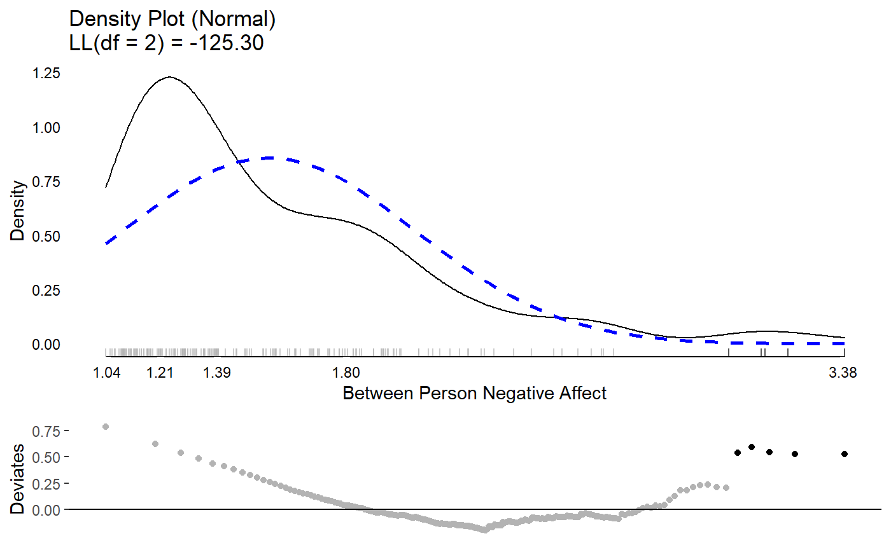
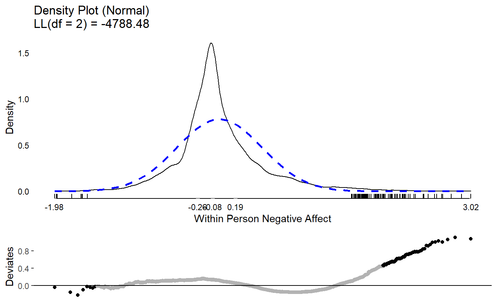
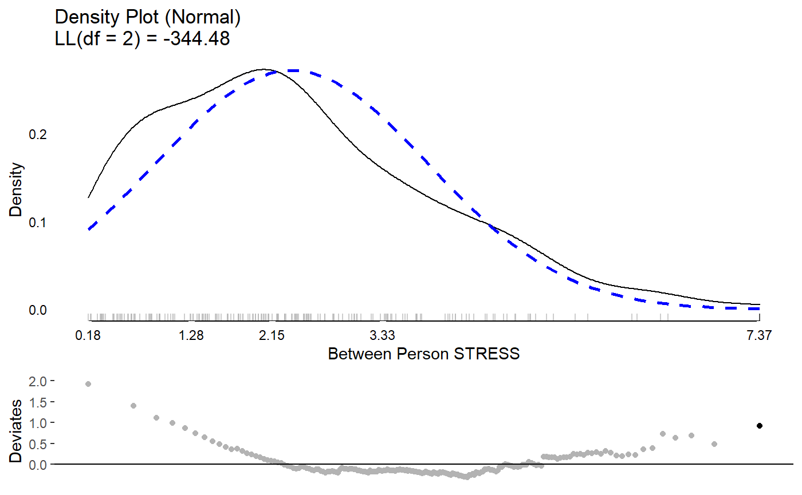
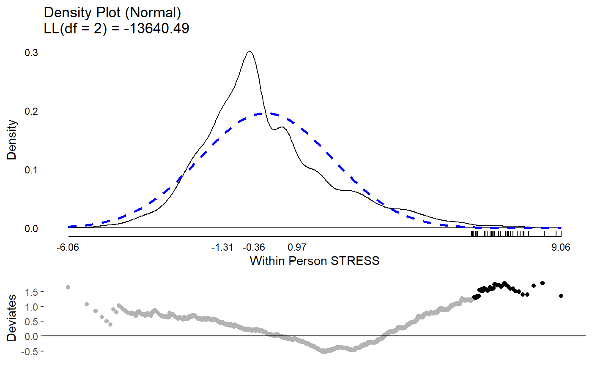
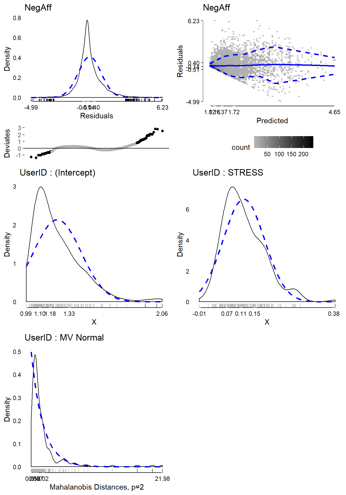
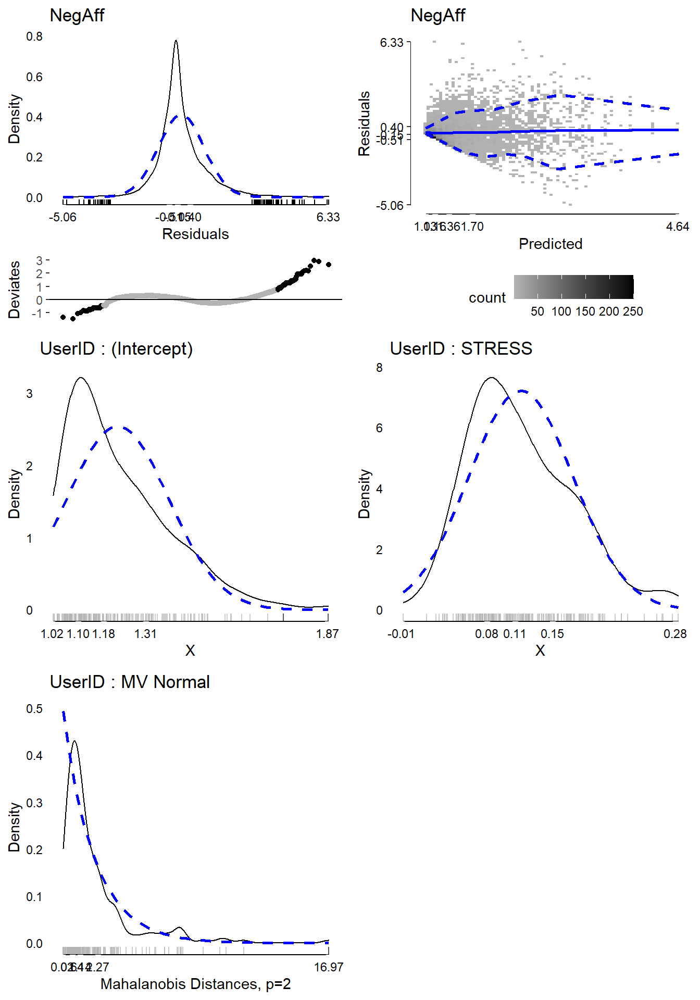
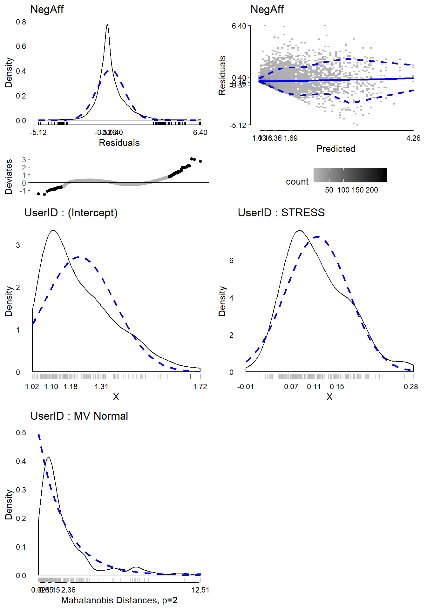

vignettes/lmer-vignette.Rmd
lmer-vignette.RmdThis vignette shows how to use the multilevelTools package for further diagnostics and testing of mixed effects (a.k.a., multilevel) models using lmer() from the lme4 package.
To get started, load the lme4 package, which actually fits the models, and the multilevelTools package. Although not required, we load the lmerTest package to get approximate degrees of freedom for use in calculating p-values for the fixed effects. Without lmerTest p-values are based on asymptotic normality. We’ll also load an example dataset from the JWileymisc package, aces_daily, using the data() function. The aces_daily dataset is simulated data from a daily, ecological momentary assessment study of 191 participants who completed ratings of activity, coping, emotions, and stress (aces) up to three times per day for twelve days. Only a subset of variables were simulated, but it is a nice example of messy, real-world type data for mixed effects / multilevel models.
## load lme4, JWileymisc, and multilevelTools packages
## (i.e., "open the 'apps' ")
library(lme4)
#> Loading required package: Matrix
library(lmerTest)
#>
#> Attaching package: 'lmerTest'
#> The following object is masked from 'package:lme4':
#>
#> lmer
#> The following object is masked from 'package:stats':
#>
#> step
library(extraoperators)
library(JWileymisc)
library(multilevelTools)
## load some sample data for examples
data(aces_daily, package = "JWileymisc")Let’s start with a quick view of the structure of the data.
## overall structure
str(aces_daily, nchar.max = 30)
#> 'data.frame': 6599 obs. of 19 variables:
#> $ UserID : int 1 1 1 1 1 1 1 1 1 1 ...
#> $ SurveyDay : Date, format: "2017-02-24" "2017-02-24" ...
#> $ SurveyInteger : int 2 3 1 2 3 1 2 3 1 2 ...
#> $ SurveyStartTimec11: num 1.93e-01 4.86e-| __truncated__ ...
#> $ Female : int 0 0 0 0 0 0 0 0 0 0 ...
#> $ Age : num 21 21 21 21 21 21 21 21 21 21 ...
#> $ BornAUS : int 0 0 0 0 0 0 0 0 0 0 ...
#> $ SES_1 : num 5 5 5 5 5 5 5 5 5 5 ...
#> $ EDU : int 0 0 0 0 0 0 0 0 0 0 ...
#> $ SOLs : num NA 0 NA NA 6.92 ...
#> $ WASONs : num NA 0 NA NA 0 NA NA 1 NA NA ...
#> $ STRESS : num 5 1 1 2 0 0 3 1 0 3 ...
#> $ SUPPORT : num NA 7.02 NA NA 6.15 ...
#> $ PosAff : num 1.52 1.51 1.56 1.56 1.13 ...
#> $ NegAff : num 1.67 1 NA 1.36 1 ...
#> $ COPEPrb : num NA 2.26 NA NA NA ...
#> $ COPEPrc : num NA 2.38 NA NA NA ...
#> $ COPEExp : num NA 2.41 NA NA 2.03 ...
#> $ COPEDis : num NA 2.18 NA NA NA ...For this example, we will just work with negative affect, NegAff, as the outcome variable and stress, STRESS, as our predictor. Because observations are repeated per person, we also need to use a variable that indicates which observations belong to which person, UserID. The code that follows shows how many unique people and observations we have for each variable.
## how many unique IDs (people) are there?
length(unique(aces_daily$UserID))
#> [1] 191
## how many not missing observations of negative affect are there?
sum(!is.na(aces_daily$NegAff))
#> [1] 6389
## how many not missing observations of stress are there?
sum(!is.na(aces_daily$STRESS))
#> [1] 6402Finally, we might explore each variable briefly, before jumping into analyzing them and examining diagnostics and effects of our models. Using the summary() function on each variable gives us some basic descriptive statistics in the form of a five number summary (minimum, first quartile, median (second quartile), third quartile, and maximum) as well as the arithmetic mean. The NA’s tell us how many observations are missing negative affect. We can see that both variables are quite skewed as their minimum, first quartile and medians are all close together and far away from the maximum.
summary(aces_daily$NegAff)
#> Min. 1st Qu. Median Mean 3rd Qu. Max. NA's
#> 1.000 1.029 1.280 1.550 1.813 5.000 210
summary(aces_daily$STRESS)
#> Min. 1st Qu. Median Mean 3rd Qu. Max. NA's
#> 0.000 0.000 1.000 2.328 4.000 10.000 197Because these are repeated measures data, another useful descriptive statistic is the intraclass correlation coefficient or ICC. The ICC is a measure of the proportion of variance that is between people versus the total variance (i.e., variance between people and variance within persons). multilevelTools provides a function, iccMixed() to estimate ICCs based off of mixed effects / multilevel models. The following code does this for negative affect and stress, first naming all the arguments and then using shorter unnamed approach, that is identical results, but easier to type. The relevant output is the ICC for the row named UserID. An ICC of 1 indicates that 100% of all variance exists between people, which would mean that 0% of variance exists within person, indicating that people have identical scores every time they are assessed. Conversely an ICC of 0 would indicate that everyone’s average was identical and 100% of the variance exists within person. For negative affect and stress, we can see the ICCs fall between 0 and 1, indicating that some variance is between people (i.e., individuals have different average levels of negative affect and stress) but also that some variance is within person, meaning that people’s negative affect and stress fluctuate or vary within a person across the day and the 12-days of the study.
iccMixed(
dv = "NegAff",
id = "UserID",
data = aces_daily)
#> Var Sigma ICC
#> 1: UserID 0.2100950 0.4374139
#> 2: Residual 0.2702166 0.5625861
iccMixed("STRESS", "UserID", aces_daily)
#> Var Sigma ICC
#> 1: UserID 2.04045 0.3228825
#> 2: Residual 4.27903 0.6771175Finally, we might want to examine the distribution of the variables visually. Visual exploration is a great way to identify the distribution of variables, extreme values, and other potential issues that can be difficult to identify numerically, such as bimodal distributions. For multilevel data, it is helpful to examine between and within person aspects of a variable separately. multilevelTools makes this easy using the meanDecompose() function. This is important as, for example, if on 11 of 12 days, someone has a negative affect score of 5, and then one day a score of 1, the score of 1 may be an extreme value, for that person even though it is common for the rest of the participants in the study. meanDecompose() returns a list with X values at different levels, here by ID and the residuals, which in this case are within person effects.
We make plots of the distributions using testDistribution(), which defaults to testing against a normal distribution, which is a common default and in our case appropriate for linear mixed effects / multilevel models. The graphs show a density plot in black lines, a normal distribution in dashed blue lines, a rug plot showing where individual observations fall, and the x-axis is a five number summary (minimum, first quartile, median, third quartile, maximum). The bottom plot is a Quantile-Quantile plot rotated to be horizontal instead of diagonal. Black dots / lines indicate extreme values, based on the expected theoretical distribution, here normal (gaussian), and specified percentile, .001. For more details, see help("testDistribution").
The between person results for negative affect show about five people with relative extreme higher scores. Considering negative affect ranges from 1 to 5, they are not impossible scores, but they are extreme relative to the rest of this particular sample. At the within person level, there are thousands of observations and there are many extreme scores. Based on these results, we may suspect that when we get into our mixed effects / multilevel model, there will be more extreme residual scores to be dealt with (which roughly correspond to within person results) than extreme random effects (which roughly correspond to between person results).
tmp <- meanDecompose(NegAff ~ UserID, data = aces_daily)
str(tmp, nchar.max = 30)
#> List of 2
#> $ NegAff by UserID :Classes 'data.table' and 'data.frame': 191 obs. of 2 variables:
#> ..$ UserID: int [1:191] 1 2 3 4 5 6 7 8 9 10 ...
#> ..$ X : num [1:191] 1.75 1.12 1.68 1.79 1.1 ...
#> ..- attr(*, ".internal.selfref")=<externalptr>
#> $ NegAff by residual:Classes 'data.table' and 'data.frame': 6599 obs. of 1 variable:
#> ..$ X: num [1:6599] -0.0787 -0.7478| __truncated__ ...
#> ..- attr(*, ".internal.selfref")=<externalptr>
plot(testDistribution(tmp[["NegAff by UserID"]]$X,
extremevalues = "theoretical", ev.perc = .001),
varlab = "Between Person Negative Affect")
plot(testDistribution(tmp[["NegAff by residual"]]$X,
extremevalues = "theoretical", ev.perc = .001),
varlab = "Within Person Negative Affect")
The same exercise for stress shows a better between and within person distribution. Certainly there is some skew and its not a perfect normal distribution. However, neither of these are required for predictors in mixed effects models. The extreme values are not that extreme or that far away from the rest of the sample, so we might feel comfortable proceeding with the data as is.
tmp <- meanDecompose(STRESS ~ UserID, data = aces_daily)
plot(testDistribution(tmp[["STRESS by UserID"]]$X,
extremevalues = "theoretical", ev.perc = .001),
varlab = "Between Person STRESS")
plot(testDistribution(tmp[["STRESS by residual"]]$X,
extremevalues = "theoretical", ev.perc = .001),
varlab = "Within Person STRESS")
With a rough sense of our variables, we proceed to fitting a mixed effects model using the lmer() function from lme4. Here we use negative affect as the outcome predicted by stress. Both the intercept and linear slope of stress on negative affect are included as fixed and random effects. The random effects are allowed to be correlated, so that, for example, people who have higher negative affect under low stress may also have a flatter slope as thye may have less room to increase in negative affect at higher stress levels.
At the time of writing, this model using the default optimizer and control criteria fails to converge (albeit the gradient is very close). These convergence warnings can be spurious but also may suggest either a too complex model or need to refine some other aspect of the model, such as scaling predictors or changing the optimizer or arguments to the optimizer.
m <- lmer(NegAff ~ STRESS + (1 + STRESS | UserID),
data = aces_daily)
#> Warning in checkConv(attr(opt, "derivs"), opt$par, ctrl = control$checkConv, :
#> Model failed to converge with max|grad| = 0.00201381 (tol = 0.002, component 1)Here we use the lmerControl() function to specify a different optimization algorithm using the Nelder-Mead Method (https://en.wikipedia.org/wiki/Nelder%E2%80%93Mead_method). We also tighten the tolerance values. This is then passed to lmer() by setting the argument, control = strictControl. This converges without warning.
strictControl <- lmerControl(optCtrl = list(
algorithm = "NLOPT_LN_NELDERMEAD",
xtol_abs = 1e-12,
ftol_abs = 1e-12))
m <- lmer(NegAff ~ STRESS + (1 + STRESS | UserID),
data = aces_daily, control = strictControl)Now we move on to examine model diagnostics. For linear mixed effects / multilevel models, the residuals should follow a normal distribution, the random effects should follow a multivariate normal distribution, and the residual variance should be homogenous (the same) as a single residual variance is estimated and used for the whole model. The modelDiagnostics() function in multilevelTools helps to evaluate these assumptions graphically.
The first plot shows (top left) the distribution of residuals. It is somewhat too narrow for a normal distribution (i.e., leptokurtic) and consequently many of the residuals on both tails are considered extreme values. However, the distribution is fairly symmetrical and for the residuals we have over 6,000 observations which will tend to make results relatively robust to violations.
The second plot (top right) shows the fitted (predicted) values for each observation against the residuals. The colour of the blocks indicates how many observations fall at a particular point. The solid blue line is a loess smooth line. Hopefully this line is about flat and stays consistently at residuals of 0 regardless of the predicted value, indicating no systematic bias. Finally the dashed blue lines indicate the 10th and 90th percentile (estimated from a quantile regression model) of the residuals across predicted values. If the residual variance is homogenous across the spread of predicted values, we would expect these dashed lines to be flat and parallel to each other. That is approximately true for all predicted values above about 1.7. For low predicted values, the residuals are 0 or higher and the spread of the dashed lines is narrowed. This is because people cannot have negative affect scores below 1 and many people reported negative affect around 1. Therefore for predicted negative affect scores of 1, the residuals tend to be about 0. This pattern is not ideal, but also not indicative of a terrible violation of the assumption. Two possible approaches to relaxing the assumption given data like these would be to use a censored model, that assumes true negative affect scores may be lower but are censored at 1 due to limitations in the measurement. Another would be to use a location and scale mixed effects model that models not only the mean (location) but also the scale (variance) as a function of some variables, which would allow the residual variance to differ. These are beyond the scope of this document, however.
The last three plots show the univariate distribution of the intercept and stress slope by UserID, the random intercept and slope and a test of whether the random intercept and slope are multivariate normal The multivariate normality test, based on the mahalonbis distances, suggests that there are a few, relatively extreme people. We might consider dropping these individuals from the analysis to examine whether results are sensitive to these extreme cases.
md <- modelDiagnostics(m, ev.perc = .001)
plot(md, ask = FALSE, ncol = 2, nrow = 3)
In order to drop people who were extreme on the multivariate normality test, we can access a data table of the extreme values from the modelDiagnostics object. We subset it to only include the multivariate effects and use the head() function to show the first few rows. The extreme value table shows the scores on the outcome, the UserID, the index (which row) in the dataset, and the effect type, here all multivariate since we subset for that. We can use the unique() function to identify the IDs, which shows it is three IDs.
mvextreme <- subset(md$extremeValues,
EffectType == "Multivariate Random Effect UserID")
head(mvextreme)
#> NegAff UserID Index EffectType
#> 1: 3.861232 56 1929 Multivariate Random Effect UserID
#> 2: 2.362821 56 1930 Multivariate Random Effect UserID
#> 3: 3.145248 56 1931 Multivariate Random Effect UserID
#> 4: 2.574245 56 1932 Multivariate Random Effect UserID
#> 5: 1.955497 56 1933 Multivariate Random Effect UserID
#> 6: 1.848545 56 1934 Multivariate Random Effect UserID
unique(mvextreme$UserID)
#> [1] 56 111 185We can update the existing model using the update() function and in the data, just subset to exclude those three extreme IDs. We re-run the diagnostics and plot again revealing one new multivariate extreme value.
m2 <- update(m, data = subset(aces_daily,
UserID %!in% unique(mvextreme$UserID)))
md2 <- modelDiagnostics(m2, ev.perc = .001)
plot(md2, ask = FALSE, ncol = 2, nrow = 3)
mvextreme2 <- subset(md2$extremeValues,
EffectType == "Multivariate Random Effect UserID")
unique(mvextreme2$UserID)
#> [1] 123Again removing this further extreme ID and plotting diagnostics suggests that now the random effects are fairly “clean”.
m3 <- update(m, data = subset(aces_daily,
UserID %!in% c(unique(mvextreme$UserID), unique(mvextreme2$UserID))))
md3 <- modelDiagnostics(m3, ev.perc = .001)
plot(md3, ask = FALSE, ncol = 2, nrow = 3)
Now that we have a model whose diagnostics we are reasonably happy with, we can examine the results. The modelPerformance() function from the multilevelTools package gives some fit indices for the overall model, including measures of the variance accounted for by the fixed effects (marginal R2) and from the fixed and random effects combined (conditional R2). We also get information criterion (AIC, BIC), although note that with a REML estimator, the log likelihood and thus information criterion are not comparable to if the ML estimator was used.
modelPerformance(m3)
#> $Performance
#> Model Estimator N_Obs N_Groups AIC BIC LL LLDF
#> 1: merMod REML 6262 UserID (187) 7173.374 7213.827 -3580.687 6
#> Sigma MarginalR2 ConditionalR2 MarginalF2 ConditionalF2
#> 1: 0.4070051 0.2428319 0.5173111 0.3207107 1.071728
#>
#> attr(,"class")
#> [1] "modelPerformance.merMod" "modelPerformance"To see the results of individual variables, we can use the summary() function to get the default model summary. Note that this summary differs slightly from that produced by lme4 as it is overridden by lmerTest which adds degrees of freedom and p-values.
summary(m3)
#> Linear mixed model fit by REML. t-tests use Satterthwaite's method [
#> lmerModLmerTest]
#> Formula: NegAff ~ STRESS + (1 + STRESS | UserID)
#> Data:
#> subset(aces_daily, UserID %!in% c(unique(mvextreme$UserID), unique(mvextreme2$UserID)))
#> Control: strictControl
#>
#> REML criterion at convergence: 7161.4
#>
#> Scaled residuals:
#> Min 1Q Median 3Q Max
#> -5.1248 -0.5156 -0.1578 0.4040 6.4032
#>
#> Random effects:
#> Groups Name Variance Std.Dev. Corr
#> UserID (Intercept) 0.027953 0.16719
#> STRESS 0.003925 0.06265 0.43
#> Residual 0.165653 0.40701
#> Number of obs: 6262, groups: UserID, 187
#>
#> Fixed effects:
#> Estimate Std. Error df t value Pr(>|t|)
#> (Intercept) 1.217e+00 1.456e-02 1.622e+02 83.64 <2e-16 ***
#> STRESS 1.152e-01 5.473e-03 1.854e+02 21.05 <2e-16 ***
#> ---
#> Signif. codes: 0 '***' 0.001 '**' 0.01 '*' 0.05 '.' 0.1 ' ' 1
#>
#> Correlation of Fixed Effects:
#> (Intr)
#> STRESS 0.103This default summary gives quite a bit of key information. However, it does not provide some of the results that often are desired for scientific publication. Confidence intervals are commonly reported and t values often are not reported in preference for p-values. In addition, it is increasingly common to ask for effect sizes. The modelTest() function in multilevelTools provides further tests, including tests of the combined fixed + random effect for each variable and effect sizes based off the independent change in marginal and conditional R2, used to calculate a sort of cohen’s F2. All of the results are available in a series of tables for any programattic use. However, for individual use or reporting, caling APAStyler() will produce a nicely formatted output for humans. Confidence intervals are added in brackets and the effect sizes at the bottom are listed for stress considering fixed + random effects together.
mt3 <- modelTest(m3)
#> Parameters and CIs are based on REML,
#> but modelTests requires ML not REML fit for comparisons,
#> and these are used in effect sizes. Refitting.
names(mt3) ## list of all tables available
#> [1] "FixedEffects" "RandomEffects" "EffectSizes" "OverallModel"
APAStyler(mt3)
#> Term Est Type
#> 1: (Intercept) 1.22*** [1.19, 1.25] Fixed Effects
#> 2: STRESS 0.12*** [0.10, 0.13] Fixed Effects
#> 3: cor_STRESS.(Intercept)|UserID 0.43 Random Effects
#> 4: sd_(Intercept)|UserID 0.17 Random Effects
#> 5: sd_STRESS|UserID 0.06 Random Effects
#> 6: sigma 0.41 Random Effects
#> 7: Model DF 6 Overall Model
#> 8: N (Groups) UserID (187) Overall Model
#> 9: N (Observations) 6262 Overall Model
#> 10: logLik -3573.08 Overall Model
#> 11: AIC 7158.16 Overall Model
#> 12: BIC 7198.61 Overall Model
#> 13: Marginal R2 0.24 Overall Model
#> 14: Marginal F2 0.32 Overall Model
#> 15: Conditional R2 0.52 Overall Model
#> 16: Conditional F2 1.07 Overall Model
#> 17: STRESS (Fixed + Random) 0.32/0.24, p < .001 Effect Sizes
#> 18: STRESS (Random) -0.07/0.01, p < .001 Effect SizesThe output of APAStyler() can easily be copied and pasted into Excel or Word for formatting and publication. If the format is not as desired, some changes are fairly easy to make automatically. For example the following code uses 3 decimal points, lists exact p-values, and uses a semi colon instead of a comma for confidence intervals.
APAStyler(mt3,
format = list(
FixedEffects = "%s, %s (%s; %s)",
RandomEffects = c("%s", "%s (%s, %s)"),
EffectSizes = "%s, %s; %s"),
digits = 3,
pcontrol = list(digits = 3, stars = FALSE,
includeP = TRUE, includeSign = TRUE,
dropLeadingZero = TRUE))
#> Term Est Type
#> 1: (Intercept) 1.217, p < .001 (1.189; 1.246) Fixed Effects
#> 2: STRESS 0.115, p < .001 (0.104; 0.126) Fixed Effects
#> 3: cor_STRESS.(Intercept)|UserID 0.427 Random Effects
#> 4: sd_(Intercept)|UserID 0.167 Random Effects
#> 5: sd_STRESS|UserID 0.063 Random Effects
#> 6: sigma 0.407 Random Effects
#> 7: Model DF 6 Overall Model
#> 8: N (Groups) UserID (187) Overall Model
#> 9: N (Observations) 6262 Overall Model
#> 10: logLik -3573.079 Overall Model
#> 11: AIC 7158.158 Overall Model
#> 12: BIC 7198.611 Overall Model
#> 13: Marginal R2 0.243 Overall Model
#> 14: Marginal F2 0.322 Overall Model
#> 15: Conditional R2 0.517 Overall Model
#> 16: Conditional F2 1.068 Overall Model
#> 17: STRESS (Fixed + Random) 0.322, 0.242; p < .001 Effect Sizes
#> 18: STRESS (Random) -0.069, 0.005; p < .001 Effect SizesFinally, APAStyler() can be used with multiple models to create a convenient comparison. For example, although we removed several extreme values, we might want to compare the results in the full data to the dataset with extreme values removed to evaluate whether critical coefficients or effect sizes changed and if so how much. Some quantities, like the log likelihood, AIC and BIC are not comparable as the sample size changed. However, effect size estimates like the model marginal and conditional R2 can be reasonably compared as can the fixed effect coefficients and the effect sizes for particular predictors.
To create the output, we pass a list of modelTest objects and we can add names so that they are more nicely named in the output. The results show that the intercept, the predicted negative affect when stress is zero is very slightly higher in the original than in the model with outliers removed. The fixed effect coefficient for stress is identical, but the confidence interval is very slightly wider after removing outliers. Variability in the random intercept, slope, and residual variance, sigma, are all slightly reduced. All in all, we could conclude that the overall pattern of results and any conclusions that might be drawn from them would not functionally change in the model with all cases included versus after removing the extreme values, in this case. This effectively serves as a “sensitivity analysis” evaluating how sensitive the results of the model are to the inclusion / exclusion of extreme values. In this case, not very sensitive, which may be encouraging. In cases where there are large differences in the results, careful thought may be needed around which model is more likely to be “true” and what the implications of the differences are for interpretting and utilizing the results.
## run modelTest() on the original model, m
mt <- modelTest(m)
#> Parameters and CIs are based on REML,
#> but modelTests requires ML not REML fit for comparisons,
#> and these are used in effect sizes. Refitting.
APAStyler(list(Original = mt, `Outliers Removed` = mt3))
#> Term Original Outliers Removed
#> 1: (Intercept) 1.24*** [1.20, 1.27] 1.22*** [1.19, 1.25]
#> 2: STRESS 0.12*** [0.11, 0.13] 0.12*** [0.10, 0.13]
#> 3: cor_STRESS.(Intercept)|UserID 0.47 0.43
#> 4: sd_(Intercept)|UserID 0.21 0.17
#> 5: sd_STRESS|UserID 0.07 0.06
#> 6: sigma 0.42 0.41
#> 7: Model DF 6 6
#> 8: N (Groups) UserID (191) UserID (187)
#> 9: N (Observations) 6389 6262
#> 10: logLik -3845.41 -3573.08
#> 11: AIC 7702.81 7158.16
#> 12: BIC 7743.39 7198.61
#> 13: Marginal R2 0.23 0.24
#> 14: Marginal F2 0.29 0.32
#> 15: Conditional R2 0.55 0.52
#> 16: Conditional F2 1.23 1.07
#> 17: STRESS (Fixed + Random) 0.29/0.26, p < .001 0.32/0.24, p < .001
#> 18: STRESS (Random) -0.06/0.02, p < .001 -0.07/0.01, p < .001
#> Type
#> 1: Fixed Effects
#> 2: Fixed Effects
#> 3: Random Effects
#> 4: Random Effects
#> 5: Random Effects
#> 6: Random Effects
#> 7: Overall Model
#> 8: Overall Model
#> 9: Overall Model
#> 10: Overall Model
#> 11: Overall Model
#> 12: Overall Model
#> 13: Overall Model
#> 14: Overall Model
#> 15: Overall Model
#> 16: Overall Model
#> 17: Effect Sizes
#> 18: Effect Sizes